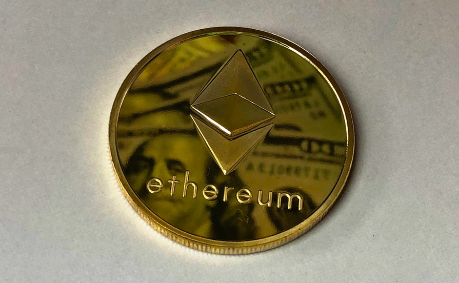

Everything You Need to Know About Ethereum
What is Ethereum?
Ethereum is a decentralized, open-source blockchain with smart contract functionality. Ether (ETH or Ξ) is the native cryptocurrency of the platform. After Bitcoin, it is the largest cryptocurrency by market capitalization. Ethereum is the most actively used blockchain. Ethereum was proposed in 2013 by programmer Vitalik Buterin. In 2014, development was crowdfunded, and the network went live on 30 July 2015.[4] The platform allows developers to deploy permanent and immutable decentralized applications onto it, with which users can interact. Decentralized finance (DeFi) applications provide a broad array of financial services without the need for typical financial intermediaries like brokerages, exchanges, or banks, such as allowing cryptocurrency users to borrow against their holdings or lend them out for interest. Ethereum also allows for the creation and exchange of NFTs, which are non-interchangeable tokens connected to digital works of art or other real-world items and sold as unique digital property. Additionally, many other cryptocurrencies operate as ERC-20 tokens on top of the Ethereum blockchain and have utilized the platform for initial coin offerings. Ethereum has started implementing a series of upgrades called Ethereum 2.0, which includes a transition to proof of stake and aims to increase transaction throughput using sharding.
History of Ethereum
Ethereum was initially described in a white paper by Vitalik Buterin, a programmer and co-founder of Bitcoin Magazine, in late 2013 with a goal of building decentralized applications. Buterin argued that Bitcoin and blockchain technology could benefit from other applications besides money and needed a scripting language for application development that could lead to attaching real-world assets, such as stocks and property, to the blockchain. In 2013, Buterin briefly worked with eToro CEO Yoni Assia on the Colored Coins project and drafted its white paper outlining additional use cases for blockchain technology. However, after failing to gain agreement on how the project should proceed, he proposed the development of a new platform with a more general scripting language that would eventually become Ethereum. Ethereum was announced at the North American Bitcoin Conference in Miami, in January 2014. During the conference, Gavin Wood, Charles Hoskinson, and Anthony Di Iorio (who financed the project) rented a house in Miami with Buterin to develop a fuller sense of what Ethereum might become. Di Iorio invited friend Joseph Lubin, who invited reporter Morgen Peck, to bear witness. Peck subsequently wrote about the experience in Wired. Six months later the founders met again in a house in Zug, Switzerland, where Buterin told the founders that the project would proceed as a non-profit. Hoskinson left the project at that time. Ethereum has an unusually long list of founders. Anthony Di Iorio wrote: "Ethereum was founded by Vitalik Buterin, Myself, Charles Hoskinson, Mihai Alisie & Amir Chetrit (the initial 5) in December 2013. Joseph Lubin, Gavin Wood, & Jeffrey Wilcke were added in early 2014 as founders." Formal development of the software began in early 2014 through a Swiss company, Ethereum Switzerland GmbH (EthSuisse). The basic idea of putting executable smart contracts in the blockchain needed to be specified before the software could be implemented. This work was done by Gavin Wood, then the chief technology officer, in the Ethereum Yellow Paper that specified the Ethereum Virtual Machine. Subsequently, a Swiss non-profit foundation, the Ethereum Foundation (Stiftung Ethereum), was created as well. Development was funded by an online public crowdsale from July to August 2014, with the participants buying the Ethereum value token (Ether) with another digital currency, Bitcoin. While there was early praise for the technical innovations of Ethereum, questions were also raised about its security and scalability. In 2019, Ethereum Foundation employee Virgil Griffith was arrested by the US government for presenting at a blockchain conference in North Korea.
Understanding Ethereum
Ethereum was created to enable developers to build and publish smart contracts and distributed applications (dapps) that can be used without the risks of downtime, fraud, or interference from a third party. Ethereum describes itself as "the world's programmable blockchain." It distinguishes itself from Bitcoin as a programmable network that serves as a marketplace for financial services, games, and apps, all of which can be paid for in Ether cryptocurrency and are safe from fraud, theft, or censorship.
The Ethereum Business
Ethereum's main competitors for businesses investing in a blockchain software platform, according to Gartner Research, include Bitcoin, Ripple, IBM, IOTA, Microsoft, Blockstream, JP Morgan, and NEO. "$2,236" The market value of one ETH at the end of May 2021. Separately, Ether is a contender in the highly volatile cryptocurrency market. As of May 2021, Ethereum was the second-largest cryptocurrency based on value, after Bitcoin. Its market cap was estimated at $500 billion compared to $1.080 trillion for Bitcoin, according to Analytics Insight. (The other eight on Analytics Insight's Top 10 list include Binance Coin, Dogecoin, Cardano, Tether, XRP, Internet Computer, Polkadot, and Bitcoin Cash.)
Ethereum-Based Projects
Ethereum claims its platform can be used to “codify, decentralize, secure, and trade just about anything.” A number of projects are underway to test the concept. Microsoft is in partnership with ConsenSys to offer Ethereum Blockchain as a Service (EBaaS) on the Microsoft Azure cloud. It is intended to offer Enterprise clients and developers a single click cloud-based blockchain developer environment. In 2020, Advanced Micro Devices (AMD) and ConsenSys announced a joint venture to create a network of data centers built on the Ethereum infrastructure.
Ethereum's Continuing Evolution
The founders of Ethereum were among the first to consider the potential of blockchain technology for uses beyond the secure trading of virtual currency. Its ETH cryptocurrency was created primarily as a medium of payment for apps built on its platform. Its invulnerability to hackers and other snoopers has opened up possibilities for the storage of private information from healthcare records to voting systems. Its reliance on cryptocurrency opened up opportunities for programmers to create and market games and business applications on the network.
The Hard Fork
A blockchain may be invulnerable to hacker attacks, but it's not for lack of trying. In 2016, a malicious actor stole more than $50 million worth of Ether that had been raised for a project called The DAO, a set of smart contracts created by a third party and originating from Ethereum's software platform. The successful raid was blamed on a third-party developer. The Ethereum community opted to reverse the theft by creating a "hard fork," invalidating the existing blockchain and creating a second Ethereum blockchain. The original is known as Ethereum Classic.
Ethereum 2.0
As of May 2021, Ethereum was the second-largest virtual currency on the market, behind only Bitcoin.1 The number of ETHs in circulation crossed the 100 million mark back in 2018. Unlike Bitcoin, there is no limit to the number of ETHs that can be created. Ethereum is currently undergoing a long-awaited upgrade known as Ethereum 2.0, which is intended to allow the network to scale up while addressing congestion problems that have slowed it down in the past.10 (In 2017, a game called CryptoKitties single-handedly slowed down transactions on the platform.) "Ethereum has wider ambitions than Bitcoin. It wants to be a platform for all kinds of applications that can store information safely."
Criticisms of Ethereum
Ethereum faces the same criticisms that all cryptocurrency platforms face:
1. Prices of all cryptocurrencies, including Ether, tend to mirror bitcoin price action.
This has been evident for years and is front and center at present. For example, in 2017,
bitcoin's value seesawed between about $900 and about $20,000. In April 2021, bitcoin hit a
high of around $63k, and hovering around $30k in July 2021. As such, cryptocurrencies
remain highly speculative and subject to both bullish and bearish periods.
2. Each of these networks is eating up a vast amount of energy. Cryptocurrency miners, in
particular, are devoting a huge amount of computing power to the process of validating
transactions. One of China's reasons for cracking down on cryptocurrency there is the fossil
fuel energy drain caused by large-scale crypto coin mining operations.
Ethereum also has faced criticism over its fees. That may change with the introduction of
Ethereum 2.0.
How To Buy Ethereum?
1. Identify a Platform for Trading
As the basis for placing any trades it is important to identify the best trading platform for your needs. There are a few options when it comes to cryptocurrencies with some of the top platforms including: Coinbase, Kraken, Bitstamp, Gemini, Binance, and Bitfinex. All of these exchanges offer ethereum. One of the biggest considerations for choosing a cryptocurrency trading platform is the type of exchange. Cryptocurrency trading platforms can be either fiat exchanges or cryptocurrency to cryptocurrency exchanges (C2C). As one of the three largest cryptocurrencies in the world, investors can trade ethereum easily on fiat exchanges. Some investors who want to trade multiple currencies or have the option to convert other currencies easily into ethereum may want to consider the C2C exchanges more closely. A lot of investors also have multiple accounts with both a fiat exchange and a C2C exchange. Keep in mind that cryptocurrencies are highly unregulated with rapid innovation. This can create a great market opportunity but also increase the risks of fraud so it’s important to be sure you are confident in the credibility of the trading platform exchange that you choose. A few key questions to ask when considering an exchange include: Where is the headquarters?, Do they have a license?, How secure is their website?, How secure are your funds?, and Who are the managing executives? Worldwide, Binance is the leading exchange by trading revenue. In the United States Coinbase tops the list.
2. Create an Account
Once you have decided on a trading platform that fits your needs then the next step is to open an account. This process is similar to opening an account with a brokerage platform. You will need to provide your name, address, social security number, specified forms of identification, and more. Once you are confident with a site, the account opening process can usually be done pretty quickly Verifying the account is usually the final step in the account opening process. Most all exchanges will require that you verify your account in one or more ways. This is where you will likely need to upload documents to verify your identity and ensure that your account passes regulatory muster. Verification can take anywhere from approximately one hour to potentially a day or two depending on the exchange.
3. Deposit Currency
You'll next need to deposit currency into your account. For fiat currency platforms this can be relatively easy after verification of your payment information. Simply add money through your bank account or debit card on file. Cryptocurrency exchanges do not generally have high minimum investments so you can invest as little as $5 or as much as $1,000 or more. Most exchanges have fees per trade so it can be best to trade large amounts at once. Depositing currency in C2C exchanges can be slightly more difficult. These exchange require you to send cryptocurrency by code from one location to another. Ethereum is a popular depositing currency for many C2C platforms so holding large amounts of it can be beneficial. Code transfers take slightly longer to complete, typically up to an hour.
4. Begin Trading
With a verified account and money deposited into that account, you'll be able to begin purchasing ethereum and other cryptocurrencies via the exchange. Each exchange has an interface that works somewhat differently but be prepared to confirm transactions and then allow for processing time, which can also depend on the total number of transactions requested.
5. Withdraw ETH into a Wallet
Once you have purchased ETH through the exchange, you can withdraw that currency into your bank account or a wallet that you control. Fiat exchanges make it easy to withdraw ETH by simply selling and sending the proceeds to your bank account. C2C platforms take a longer amount of time. On a C2C platform you would need to code transfer your ETH to a fiat exchange and then sell to cash out. On all platforms you also generally have the option to send ETH to a wallet.